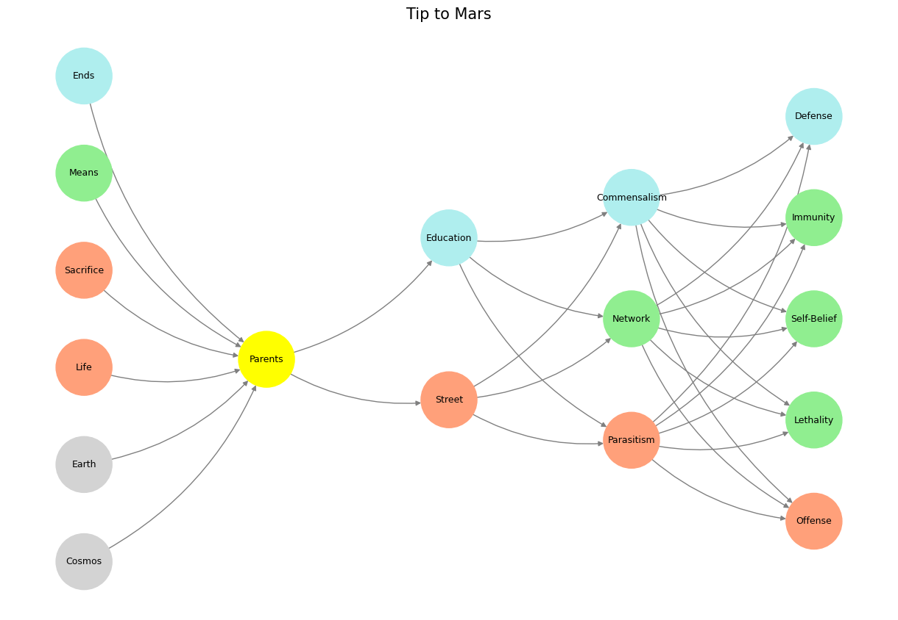

The Five Layers of Judgment: A Sequel to the Hidden Interactions#
The passage from Matthew 25:31–40 reveals a layered tapestry of divine judgment, human behavior, and the moral architecture of the world. When viewed through the lens of the neural network—spanning the foundational world, worldview, perception, hidden combinatorial space, and optimized outcomes—the parable of the sheep and goats becomes a profound allegory for human agency and the eternal interplay between cooperation, iteration, and adversarial dynamics.
“Then shall the King say unto them on his right hand, Come, ye blessed of my Father, inherit the kingdom prepared for you from the foundation of the world.”
At the first layer, we encounter the foundational world—a pre-input stage where the immutable laws of existence and divine justice were set in place. The phrase “foundation of the world” evokes a sense of timelessness, suggesting that the moral fabric underpinning this judgment was woven into the cosmos itself. This is the layer of creation, where the cosmos, earth, and life emerge as raw inputs into the vast system of divine interaction. Here, the sheep and goats are not yet separated but coexist within the potentiality of the world’s structure, mirroring the latent states of any neural network awaiting activation.
In this foundational space, the wilderness plays a dual role as both chaos and potential. The wilderness, where the scapegoat is exiled in Leviticus 16, represents the unstructured combinatorial field that serves as the foundation for iterative trials. The sheep graze in harmony, embodying a cooperative alignment with this foundational order, while the goats roam unpredictably, testing the boundaries of creation. It is in this layer that coffee, symbolically and literally, exists as an undiscovered treasure—a resource awaiting its moment of emergence.
We provide that guidance
– Navigare, Die Zauberflöte, The Rug, Rosebud, Yellowstone
Fig. 14 Trump—Flanked By Larry Ellison, Sam Altman, & Masayoshi Son—Announces Project Stargate. President Trump, flanked by top tech executives and AI experts, announces a major new AI initiative called Project Stargate. Our App provides infrastructure that connects this to the academic medicines workflows#
“Then shall the King say unto them on his right hand, Come, ye blessed of my Father, inherit the kingdom prepared for you.”
The second layer reflects worldview, a perceptual frame that divides the sheep from the goats. To inherit the kingdom is to align one’s actions with a divine perspective—a worldview governed by humility, service, and the prioritization of others over self. The worldview acts as a filter, channeling the foundational world into agentic choices. The sheep, with their cooperative nature, naturally align with this kingdom perspective. Their worldview is relational and empathetic, rooted in the recognition of others’ needs.
The goats, by contrast, operate from an adversarial worldview, driven by self-interest and independence. They are not inherently wicked but fail to recognize the relational ties that bind the world together. Their worldview is narrower, focused on individual survival rather than communal flourishing. This division reflects the neural network’s processing of sensory inputs into structured perceptions, where worldview determines how raw data from the world is interpreted and acted upon.
“And he shall set the sheep on his right hand, but the goats on the left.”
At the third layer, perception becomes agentic. The sheep and goats, representing cooperative and adversarial behaviors, are sorted into distinct outputs based on their actions. This layer corresponds to the neural network’s input nodes—processing and weighing signals to determine how they align with the hidden dynamics of the system.
The sorting of sheep and goats is not arbitrary; it is the outcome of accumulated choices and behaviors. The sheep’s acts of kindness—feeding the hungry, clothing the naked, visiting the sick—demonstrate an agentic alignment with the kingdom’s values. The goats, by neglecting these same acts, reveal a disconnection from the cooperative equilibria necessary for divine harmony. Yet even in their separation, the goats serve a purpose. Their adversarial nature pushes the boundaries of the system, testing its resilience and refining its processes through iteration.
This dynamic mirrors the discovery of coffee by an itinerant goat. The goat’s restless exploration, while seemingly chaotic, led to the uncovering of something transformative. Similarly, in human systems, the adversarial forces represented by the goats are necessary to catalyze growth and adaptation, even as they are ultimately separated from the cooperative harmony of the sheep.
Fig. 15 The numbers in private equity don’t add up because its very much like a betting in a horse race. Too many entrants and exits for anyone to have a reliable dataset with which to estimate odds for any horse-jokey vs. the others for quinella, trifecta, superfecta#
“For I was an hungred, and ye gave me meat: I was thirsty, and ye gave me drink.”
The hidden layer represents the combinatorial space where deeds are weighed, intentions are discerned, and outcomes are optimized. The phrase “I was a commensal by thy deeds” encapsulates this dynamic. In biology, a commensal relationship is one where one party benefits while the other is unaffected. Yet in this parable, Jesus reframes commensalism as a moral obligation: those who act with compassion toward the least of these elevate both the recipient and themselves. The hidden layer transforms transactional interactions into a symbiotic relationship that benefits the entire system.
In this space, the actions of the sheep are not merely individual acts of kindness but part of a broader network of mutual flourishing. The goats, in failing to recognize their commensal responsibility, disrupt this balance. The hidden layer thus becomes the realm of divine judgment, where deeds are not only recorded but also amplified, iterated upon, and fed back into the system to shape future interactions.
“And these shall go away into everlasting punishment: but the righteous into life eternal.”
The fifth layer is the optimization of outputs, where the system reaches its final state. This is the layer of eternal consequences: the “everlasting fire” prepared for the adversarial forces versus the “kingdom prepared” for the cooperative. Here, the network resolves its computations, assigning each node to its optimal end based on its alignment with the system’s values.
The fire is not merely punishment but a necessary clearing of adversarial disruptions, a purging of elements that fail to harmonize with the system’s goals. The kingdom, by contrast, represents the ultimate optimization of cooperative and iterative dynamics, a state of eternal flourishing where every interaction contributes to the whole. The sheep inherit this kingdom not because they are perfect but because their actions align with the system’s hidden layer, optimizing for mutual benefit and divine purpose.
The interplay of these five layers—from the foundation of the world to the optimization of eternal outcomes—reveals the profound depth of Matthew 25:31–40. The parable of the sheep and goats is more than a story of judgment; it is a blueprint for understanding the hidden dynamics of human behavior. Through the lens of the neural network, it becomes clear that the cooperative, iterative, and adversarial forces at play are not merely moral categories but essential elements of a system designed to optimize for growth, harmony, and discovery.
Like the itinerant goat that led us to coffee, it is through exploration, trial, and error that humanity uncovers the treasures hidden within the vast combinatorial spaces of existence. And like the sheep who graze in peace, it is through cooperation and care for others that we align ourselves with the kingdom prepared from the foundation of the world. Together, these dynamics create a system that, while imperfect and often chaotic, ultimately strives for a state of eternal balance and flourishing.
Show code cell sourceHide code cell source
importnumpyasnpimportmatplotlib.pyplotaspltimportnetworkxasnx# Define the neural network structuredefdefine_layers():return{'World':['Cosmos','Earth','Life','Sacrifice','Means','Ends',],'Perception':['Parents'],'Agency':['Street','Education'],'Generativity':['Parasitism','Network','Commensalism'],'Physicality':['Offense','Lethality','Self-Belief','Immunity','Defense']}# Assign colors to nodesdefassign_colors():color_map={'yellow':['Parents'],'paleturquoise':['Ends','Education','Commensalism','Defense'],'lightgreen':['Means','Network','Immunity','Self-Belief','Lethality'],'lightsalmon':['Life','Sacrifice','Street','Parasitism','Offense'],}return{node:colorforcolor,nodesincolor_map.items()fornodeinnodes}# Calculate positions for nodesdefcalculate_positions(layer,x_offset):y_positions=np.linspace(-len(layer)/2,len(layer)/2,len(layer))return[(x_offset,y)foryiny_positions]# Create and visualize the neural network graphdefvisualize_nn():layers=define_layers()colors=assign_colors()G=nx.DiGraph()pos={}node_colors=[]# Add nodes and assign positionsfori,(layer_name,nodes)inenumerate(layers.items()):positions=calculate_positions(nodes,x_offset=i*2)fornode,positioninzip(nodes,positions):G.add_node(node,layer=layer_name)pos[node]=positionnode_colors.append(colors.get(node,'lightgray'))# Default color fallback# Add edges (automated for consecutive layers)layer_names=list(layers.keys())foriinrange(len(layer_names)-1):source_layer,target_layer=layer_names[i],layer_names[i+1]forsourceinlayers[source_layer]:fortargetinlayers[target_layer]:G.add_edge(source,target)# Draw the graphplt.figure(figsize=(12,8))nx.draw(G,pos,with_labels=True,node_color=node_colors,edge_color='gray',node_size=3000,font_size=9,connectionstyle="arc3,rad=0.2")plt.title("Tip to Mars",fontsize=15)plt.show()# Run the visualizationvisualize_nn()

Fig. 16 Change of Guards. In Grand Illusion, Renoir was dealing the final blow to the Ancién Régime. And in Rules of the Game, he was hinting at another change of guards, from agentic mankind to one in a mutualistic bind with machines (unsupervised pianos & supervised airplanes). How priscient!#